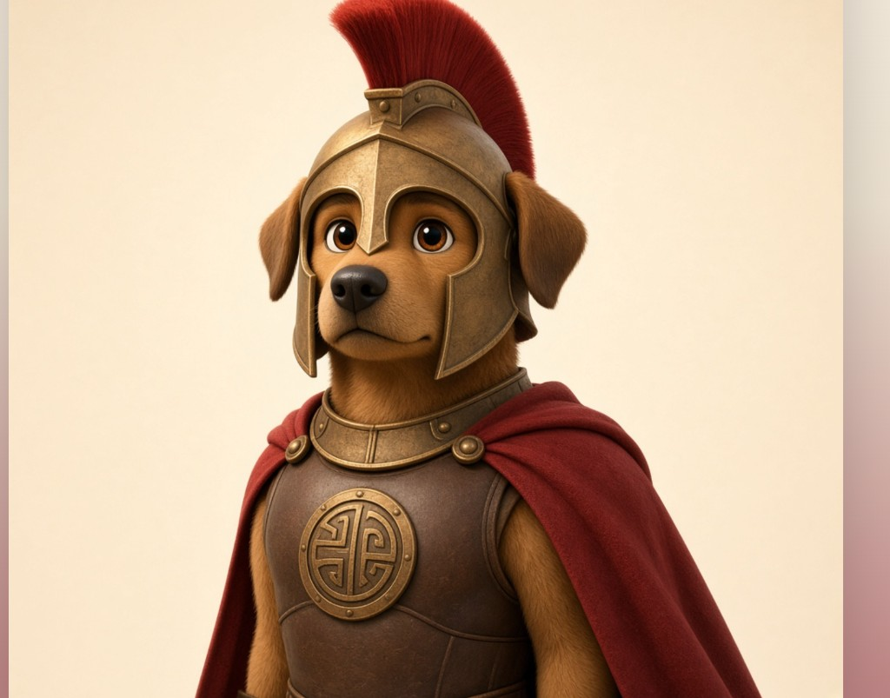

HackUTA · University of Texas at Arlington
A steady companion on the call
Named after Argos, the dog who waited for Odysseus. Phone magnifiers help, but the words vanish when you put the phone down. Argo stays on FaceTime, answers out loud, and can text you a high-contrast handout you can pinch-zoom and keep.
How it works
-
1
Call on FaceTime Video
No app to install. Use the number above while a teammate has Argo running.
-
2
Show something and ask
“Read this.” “How much sodium?” “What are the ingredients?”
-
3
Keep what matters
Say “text me that” for a large-print PNG. Say “change theme,” then cream, yellow, white, or dark.
What to say
- Read this / what is this?
- Looks at the camera and answers
- How much sodium?
- Answers from pictures this call
- Text me that
- Sends a large-text image to iMessage
- Change theme
- Then cream, yellow, white, or dark
- Stop
- Quits talking mid-read

Built to be readable
iMessage handouts use high-contrast themes (about 15:1–21:1) aimed at WCAG text contrast and common low-vision print practice. Pinch to zoom in Messages. After a call, you can text the same line to recall something from a past FaceTime read when the inbox is running.